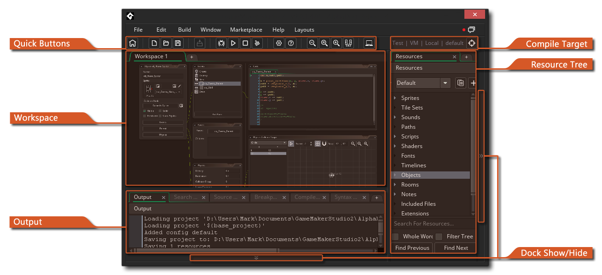
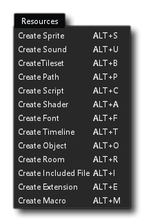
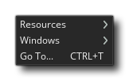
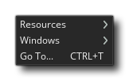

Nachdem Sie sich eingeloggt und ein neues Projekt gestartet haben, bringt Sie GameMaker Studio 2 zum ersten Arbeitsbereich mit einigen an die IDE angedockten Basisfenstern. Im Allgemeinen ist der Arbeitsbereich einfach ein Bereich, in dem Sie die verschiedenen Ressourcen Ihres Spiels während der Arbeit organisieren können: 
Wie Sie sehen, befindet sich der ursprüngliche Arbeitsbereich auf einer Registerkarte am oberen Bildschirmrand (und Sie können ihn durch Doppelklicken auf die Registerkarte umbenennen). Sie können jedoch weitere Arbeitsbereiche für das Projekt erstellen, indem Sie auf die Schaltfläche klicken zur Seite und bietet Ihnen mehrere mögliche Arbeitsbereiche für jedes einzelne Projekt. Vielleicht arbeitest du beispielsweise an Interaktionen zwischen dem Spieler und mehreren feindlichen Objekten, so dass du den Spieler auf seinem eigenen Arbeitsbereich und die feindlichen Objekte in einem anderen und vielleicht noch einem anderen Arbeitsbereich hast, nur um die Skripte anzuzeigen, die beide verwenden.
Ein weiteres wichtiges Merkmal von Arbeitsbereichen ist, dass Sie klicken können  auf der Registerkarte und - immer noch die Maustaste gedrückt halten
auf der Registerkarte und - immer noch die Maustaste gedrückt halten  nach unten - ziehen Sie es aus dem IDE-Hauptfenster in ein eigenes Fenster, wodurch es sehr einfach ist, Dinge zu organisieren, wenn Sie beispielsweise mehrere Anzeigen verwenden. Sie fügen diese sekundären Arbeitsbereichsfenster auch wieder in das Hauptfenster ein, indem Sie das Register zurück auf das erste Fenster ziehen. Beachten Sie, dass zwei Instanzen der IDE ausgeführt werden, wenn Sie dies tun. Sie sind jedoch beide für dasselbe Projekt und Sie können nicht ein Projekt in einem und dem anderen Projekt haben, es sei denn, Sie öffnen zwei Instanzen von GameMaker Studio 2.
nach unten - ziehen Sie es aus dem IDE-Hauptfenster in ein eigenes Fenster, wodurch es sehr einfach ist, Dinge zu organisieren, wenn Sie beispielsweise mehrere Anzeigen verwenden. Sie fügen diese sekundären Arbeitsbereichsfenster auch wieder in das Hauptfenster ein, indem Sie das Register zurück auf das erste Fenster ziehen. Beachten Sie, dass zwei Instanzen der IDE ausgeführt werden, wenn Sie dies tun. Sie sind jedoch beide für dasselbe Projekt und Sie können nicht ein Projekt in einem und dem anderen Projekt haben, es sei denn, Sie öffnen zwei Instanzen von GameMaker Studio 2.
Wenn Sie GameMaker Studio 2 ersten Mal starten, wird Ihr Arbeitsbereich bereits von einigen Fenstern ausgefüllt, die an die IDE "angedockt" werden. Diese werden im Folgenden kurz erläutert:
Sie können auch im Bild oben das Ausgabefenster sehen. Es gibt eine Reihe von Unterregisterkarten in diesem Fenster, die sich auf Quellcodeverwaltung, Suchen und Debuggen beziehen, wobei die erste Registerkarte für die Konsole / Compiler-Ausgabe ist, die zeigt, was passiert, wenn Sie ein Spiel zum Testen oder beim Erstellen eines Finales kompilieren Paket für den Vertrieb. Dies zeigt auch alle Debug-Meldungen an, die Sie zur Laufzeit aus Ihrem Projekt senden möchten, und kann so konfiguriert werden, dass in den allgemeinen Einstellungen verschiedene Informationsmengen angezeigt werden.
Wenn Sie das Ausgabefenster schließen und es wiederherstellen möchten, können Sie das Windows-Menü verwenden.
Auf der rechten Seite des Bildschirms finden Sie den Ressourcenbaum. Hier können Sie die von Ihrem Spiel verwendeten Ressourcen erstellen und bearbeiten sowie Konfigurationen erstellen und ändern. Ressourcen werden durch Klicken mit der rechten Maustaste erstelltWählen Sie im Ordner "Resource" den Befehl " Create" oder im Kontextmenü oben in der IDE " Resources":  Wenn Sie eine dieser Optionen auswählen, wird eine neue, leere Ressource des angegebenen Typs für Sie erstellt. Beachten Sie, dass der Ressourcenbaum zwar standardmäßig an die IDE angedockt ist, Sie ihn jedoch durch Klicken in das zugehörige Fenster entfernen können
Klicken Sie oben auf den Text "Ressourcen" und ziehen Sie. Sie können es jederzeit erneut andocken, indem Sie es an die Seiten oder die Unterseite der IDE ziehen. Wenn Sie das Ressourcenfenster schließen und es wiederherstellen möchten, können Sie das Windows-Menü verwenden.
Weitere Informationen zu den verfügbaren Ressourcen finden Sie im Abschnitt Editoren.
Navigieren im Arbeitsbereich
Während in jedem Arbeitsbereich können Sie die Rechts - Taste Menü jederzeit durch einen Rechtsklick aufrufen  überall, was das folgende Menü öffnet: 
überall, was das folgende Menü öffnet: 
Wenn Sie auf Ressourcen klicken, wird eine Liste aller Ressourcen in der Ressourcenstruktur geöffnet, die Sie erstellen können. Wenn Sie eine Ressource auswählen, wird diese Ressource für Sie erstellt und der Arbeitsbereich auf das Editorfenster für diese Ressource fokussiert. Wenn Sie auf die Option Windows klicken, wird eine Liste aller derzeit geöffneten Fenster im Arbeitsbereich angezeigt, und Sie können eine beliebige davon auswählen, damit sich der Arbeitsbereich auf dieses Fenster konzentriert. Schließlich haben Sie die Option Gehe zu, die das folgende Fenster öffnet: 
In diesem Fenster können Sie eine Liste aller Ressourcen in Ihrem Spiel sehen und Sie können oben im Fenster Text eingeben, um die angezeigten Ergebnisse zu filtern. Zum Beispiel, wenn Sie 4 Sprites alle mit dem Wort "Logo" irgendwo in ihrem Namen, wie spr_Logo_One Wenn Sie "Logo" eingeben, werden nur die vier Sprites angezeigt. Wenn Sie auf eine der Ressourcen klicken, die in der Liste angezeigt werden, wird sie im aktuellen Arbeitsbereich geöffnet oder auf den Arbeitsbereich fokussiert, sofern dieser bereits geöffnet ist. Beachten Sie, dass Sie auch die Tastenkombination verwenden können  /
/  + T um das Gehe zu Fenster zu öffnen.
+ T um das Gehe zu Fenster zu öffnen.
Eine andere Methode zum Navigieren im Arbeitsbereich besteht in der Verwendung von Lesezeichen. Sie können IDE-Fenstern oder Codeabschnitten in Skripts oder Objektereignissen bis zu 10 "Lesezeichen" hinzufügen und dann mit der richtigen Tastenkombination schnell zwischen ihnen wechseln. Um ein Lesezeichen hinzuzufügen, wählen Sie einfach das Fenster oder die Codezeile aus, die Sie markieren möchten  + + NumberKey[0 - 9], und dies setzt das Lesezeichen und beschriftet das Element in der IDE wie folgt:
+ + NumberKey[0 - 9], und dies setzt das Lesezeichen und beschriftet das Element in der IDE wie folgt: 
In dem obigen Bild haben wir Lesezeichen mit den Nummern 1, 2 und 4 verschiedenen Teilen der IDE zugewiesen, und wir können jetzt von diesen Fenstern weg navigieren oder sie sogar ganz schließen, da das Lesezeichen uns erlauben wird, direkt zu ihr zurückzukehren jederzeit später. Dies geschieht durch Drücken von  + NumberKey[0 - 9] Wenn das Lesezeichen geschlossen wurde, wird es geöffnet. Andernfalls wird der Arbeitsbereich zum ausgewählten Lesezeichen verschoben.
+ NumberKey[0 - 9] Wenn das Lesezeichen geschlossen wurde, wird es geöffnet. Andernfalls wird der Arbeitsbereich zum ausgewählten Lesezeichen verschoben.
Wenn Sie ein Lesezeichen entfernen möchten, müssen Sie nur das mit einem Lesezeichen versehene Fenster oder die Codezeile auswählen und dann die Option wiederholen  + + NumberKey[0 - 9] dass du es benutzt hast, um es zu erstellen.
+ + NumberKey[0 - 9] dass du es benutzt hast, um es zu erstellen.
Weitere Möglichkeiten zum Navigieren im Arbeitsbereich sind die Verwendung der Tastenkombination  /
/  +
+  + <Arrow Keys> um zwischen geöffneten Fenstern in der gedrückten Richtung zu wechseln und die mittlere Maustaste gedrückt zu halten
+ <Arrow Keys> um zwischen geöffneten Fenstern in der gedrückten Richtung zu wechseln und die mittlere Maustaste gedrückt zu halten  Ziehen Sie die Maus, um den Arbeitsbereich zu verschieben.
Ziehen Sie die Maus, um den Arbeitsbereich zu verschieben.
Docking
Wir erwähnten oben kurz, dass Sie viele Fenster in den aktuellen Arbeitsbereich Fenster andocken können und Sie können diejenigen un-Dock, die bereits angedockt sind. Wenn Sie klicken  Wenn Sie beispielsweise oben auf der Registerkarte "Ressourcen-Struktur" auf die linke Seite des aktuellen Arbeitsbereichs ziehen, sehen Sie, dass es ein frei schwebendes Fenster wird.
Wenn Sie beispielsweise oben auf der Registerkarte "Ressourcen-Struktur" auf die linke Seite des aktuellen Arbeitsbereichs ziehen, sehen Sie, dass es ein frei schwebendes Fenster wird.

Diese Umkehrung ist richtig, und wenn Sie bestimmte Fenster an die Seiten des Arbeitsbereichs (oder der Unterseite) ziehen, werden sie angedockt, was bedeutet, dass sie im Wesentlichen Teil des IDE-Fenster-Overlays werden und nicht mehr unabhängig sind. Wenn Sie dies tun, ziehen Sie das Fenster in den Bereich, an den Sie andocken möchten, und es wird hervorgehoben, um anzuzeigen, dass Sie das Fenster dort andocken können:

Auf diese Weise können Sie ein personalisiertes IDE-Erlebnis erstellen, das zu Ihrem Workflow und Ihrer Vorgehensweise passt. Beachten Sie, dass alle angedockten Fenster einzeln ein- und ausgeblendet werden können, indem Sie auf die Schaltfläche neben den angedockten Elementen klicken (im Bild oben auf dieser Seite hervorgehoben), oder alle angedockten Elemente mit der Schnellauswahltaste ein- / ausblenden  an der Spitze der IDE, und beachten Sie auch, dass die IDE angedockte Fenster zwischen Sitzungen erinnert.
an der Spitze der IDE, und beachten Sie auch, dass die IDE angedockte Fenster zwischen Sitzungen erinnert.
Schnellschaltflächen
Im Folgenden listen wir die Schnellschaltflächen auf, die in GameMaker Studio 2 standardmäßig verfügbar sind. Diese Schaltflächen befinden sich oben in der IDE und stellen viele der gebräuchlichsten Befehle dar, die Sie während der Arbeit mit GameMaker Studio 2, um Ihren Arbeitsablauf flüssiger zu gestalten (beachten Sie, dass die meisten dieser Schaltflächen auch eine entsprechende Menüoption haben):
| Öffnet die Startseite in einem neuen Arbeitsbereich | |
| Erstellen Sie ein neues Projekt. | |
| Öffnen Sie ein zuvor erstelltes Projekt. | |
| Speichert das aktuelle Projekt. Beachten Sie, dass GameMaker Studio 2 standardmäßig Ihr Projekt automatisch speichert (abhängig von den Einstellungen, die Sie festgelegt haben) und diese Schaltfläche ist einfach so, dass Sie jederzeit ein Speichern erzwingen können. | |
| Wenn Sie darauf klicken, wird Ihr aktuelles Projekt zusammen mit dem Debug-Modul getestet. Verwenden Sie dies, um Ihr Spiel zu testen und zu debuggen. Sie finden mehr über das Debug-Modul im Abschnitt über den Debugger. | |
| Wenn Sie darauf klicken, wird Ihr Projekt auf der gewählten Zielplattform getestet. | |
| Mit dieser Schaltfläche können Sie die Kompilierung Ihrer Spiele auf das Zielmodul abbrechen oder (nur bei bestimmten Zielen) das Spiel stoppen, während es nach der Kompilierung ausgeführt wird. | |
| Durch Drücken dieser Schaltfläche wird der aktuelle Asset-Compiler-Cache gelöscht. GameMaker Studio 2 speichert Bilder, Sounds, Skripte usw. zwischen der Verwendung in einem Cache, um beim Testen Ihres Spiels Zeit zu sparen, da nur die Dinge neu kompiliert werden, die vor dem Testen geändert wurden. Dieser Cache kann jedoch im Laufe der Zeit beschädigt oder "veraltet" werden, oder Sie möchten möglicherweise einen vollständigen Test durchführen, ohne dass vorher ein Caching durchgeführt wurde. In diesem Fall können Sie den Cache durch Drücken dieser Schaltfläche löschen. WICHTIG: Es wird empfohlen, den Cache immer zu löschen, bevor Sie die ausführbare Datei für eine Zielplattform erstellen. | |
| Wenn Sie darauf klicken, wird der Editor für Hauptspieloptionen geöffnet. Beachten Sie, dass dies nur die wichtigsten allgemeinen Optionen für das aktuelle Projekt sind. Sie können jedoch auch plattformspezifische Optionen als Teil des Ressourcenbaums angeben. | |
| Klicken Sie hier, um das Handbuch zu öffnen (oder alternativ drücken Sie | |
| Dadurch wird der fokussierte Arbeitsbereich vergrößert, um alles kleiner zu machen (Sie können dies auch erreichen) | |
| Dadurch wird der fokussierte Arbeitsbereich wieder auf 1: 1 zurückgesetzt. | |
| Dadurch wird der fokussierte Arbeitsbereich vergrößert, um alles größer zu machen (Sie können dies auch erreichen) | |
| Dies schaltet alle angedockten Elemente zwischen versteckt und eingeblendet um. | |
| Dadurch wird der Laptop-Modus ein- und ausgeschaltet (Dies wird nur angezeigt, wenn Sie gerade einen Laptop verwenden - weitere Informationen finden Sie im Abschnitt zur IDE-Eingabe ). |